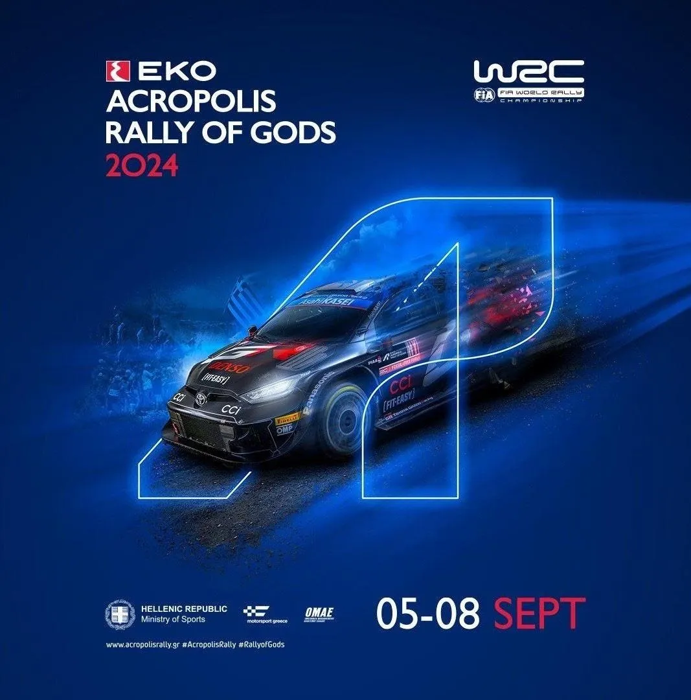
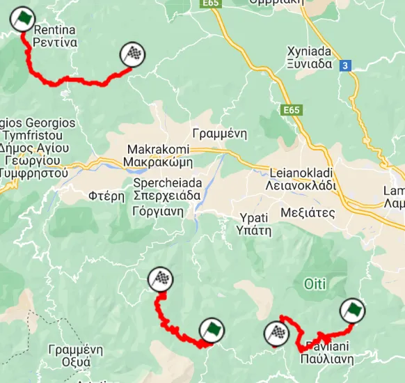

Reacting to the 2024 Acropolis Rally route
The itinerary for this year's Acropolis Rally has been revealed, and there are some surprises in it! The rally has abandoned it's usual format from the past 3 years, and the organisers have instead opted for a different one! Some notable omissions from the itinerary is the famous Bauxites or the Karoutes stage!
The rally will start in Lamia instead of Athens, with the first of the day being around Lamia. The second day of the rally is different, as the crews will have to make their way down to Loutraki, where there will also be a Super Special Stage. Sunday is the usual, with 3 stages near Lamia, one repeated. That's the jist of it, but let's take a closer look to the route, as well as what new stages there are for this edition of the rally!
Thursday is fairly straightforward, with just the shakedown. No official name is given, but based on the distance listed it's most likely the same one as 2022 and 2023, in Lygaria.
For Friday, there's some new stuff in place. SS1/4 Ano Pavliani is new, and it's been chosen over the usual Pavliani stage, due to the issues in last year's recce, where the mud made reconnaissance difficult for the crews. I estimate that it's going to follow the same route as the 2005 Koumaritsi stage, joining the normal Pavliani route about 7km in, with the finish being, near the start of the classic stage, not in Mavrolithari. SS2/5 Dafni is also a new name, but in reality it's just the second half of the Pyrgos stage that was used in 2021 and 2022! SS3/6 is the legendary Tarzan stage, used on Friday for the first time.

An estimation of how Friday's stages will look like.
Now Saturday is a bit weird. It's how Fridays used to look since 2021, but reversed. SS7 Rengini seems to be last year's Elatia stage only in reverse. SS8 is Thiva, returning after a 2 year's absence. The crews then make their way to Loutraki for SS9/11 Aghii Theodoroi and SS10 Loutraki. Aghii Theodoroi returns again after a two year absence, and it will probably use the start of the 2021 stage, but after that it's anyone's guess really. I suspect that it could be a combination of the 2021 Aghii Theodoroi stage and the 2021 Loutraki stage. As for Loutraki... no idea really. Maybe a combination of Harvati and Pissia? That seems like a possibility based on the kilometres, but it's just a guess. We will know what those stages will look like when the Rally Korinthou maps are revealed. The day ends with SSS12. I don't even want to know what that is...
Sunday is more straightforward. SS13 Inohori, I initially thought it was the older Stromi stage in reverse, but it seems that this could be a brand new stage! SS14/15 is Eleftherochori, one of the best stages of the rally, that will serve as the Power Stage, just like it did in 2022.
The Acropolis event director talked about an evolution of the route, not a revolution, but to me this is more of the latter. I am not a fan of Saturday's format, as it creates unnecessary liaison sections, and I am scared to see what the SSS will be like this year... It also makes the rally a bit of a mess to spectate, because if someone wanted to spectate all 3 days, they'd be in for quite the adventure... I am also a bit sad that Livadia and Bauxites/Karoutes is gone, as they were two of my personal favourites last year. Thiva is back instead, which is... okay, I guess, but not better than Livadia in my opinion. I am excited to see Ano Pavliani and Inohori though!